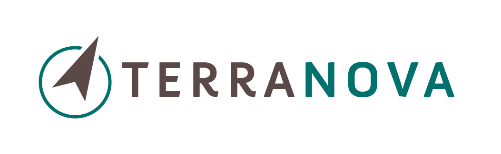
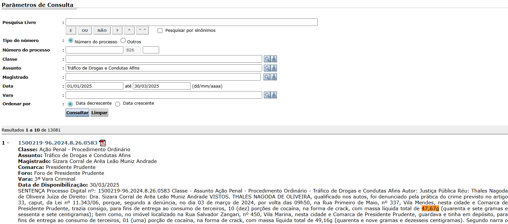
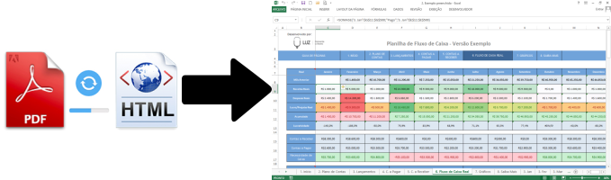
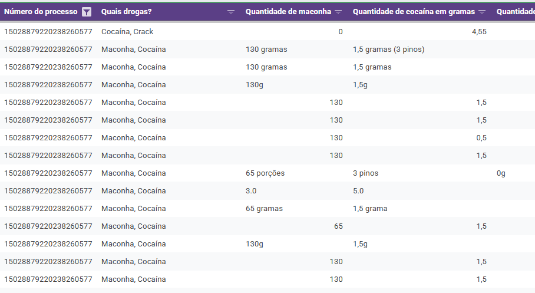
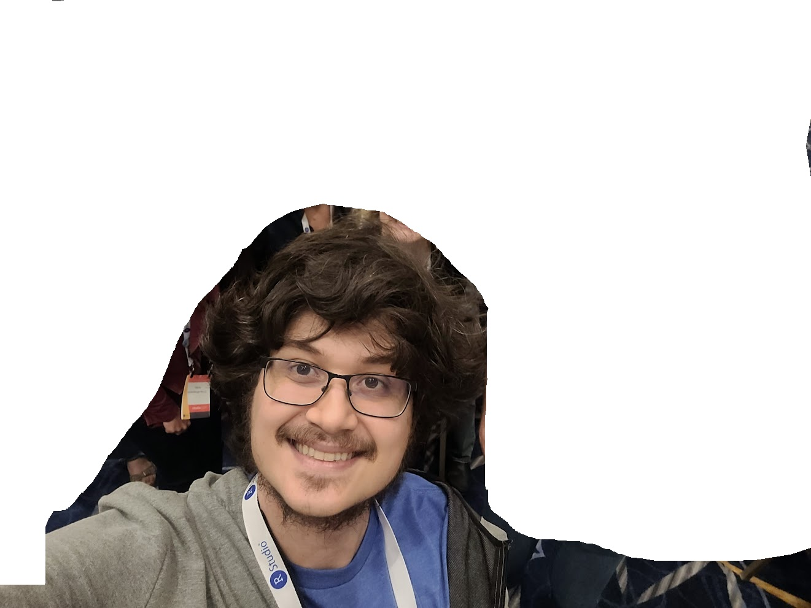
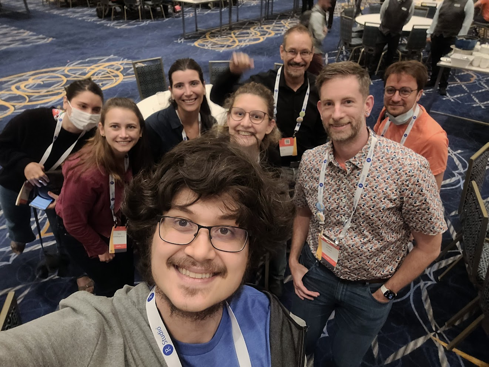
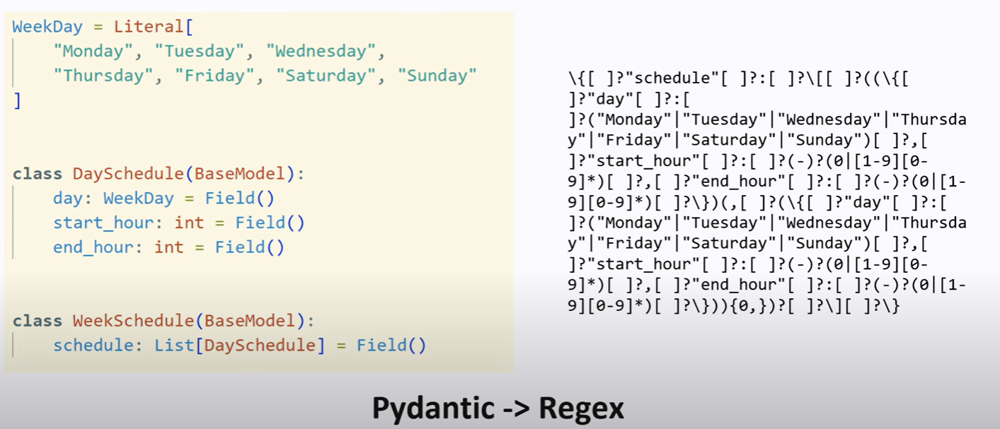
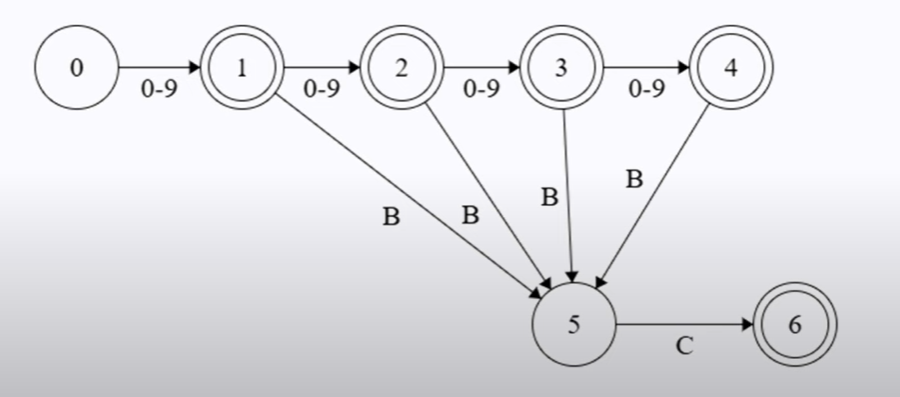
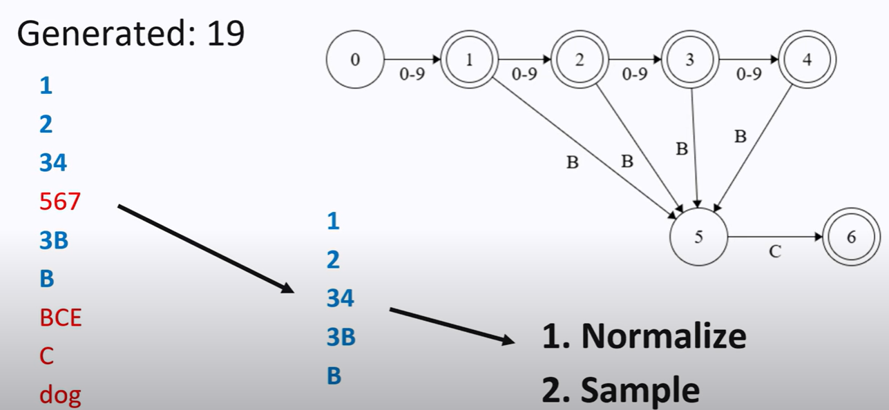
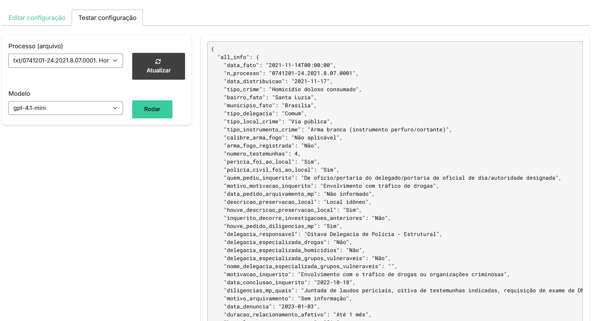

Outputs Estruturados
Usando LLMs para gerar dados estruturados com aplicações no Direito
Insper
Julio Trecenti
Doutor em estatística pelo IME-USP. Mais conhecido como “Marido da Beatriz Milz”| Professor no Insper | |

|
Diretor na Associação Brasileira de Jurimetria |
|
 |
Sócio na Terranova Consultoria |
| Pesquisador em Jurimetria no CEOE-Unifesp | |

|
Sócio na Curso-R |
Problema
Pergunta de pesquisa
Qual é a quantidade de drogas apreendidas (maconha, cocaína e crack) e a decisão judicial (condenação, absolvição ou arquivamento) em sentenças judiciais criminais?

O que queremos
Anotar dados de sentenças judiciais!!

Ou seja, transformar sentenças judiciais em dados estruturados, para calcular, por exemplo, a distribuição da quantidade de drogas em uma amostra de 100 decisões de primeiro grau no TJSP.
Como faremos

Alternativa 1: na mão
Resultado de um processo manual de anotação:

Problema: Muito trabalho. Difícil de garantir padronização.
Alternativa 2: expressões regulares (regex)
\b((?:\d{1,3}(?:[.\s]\d{3})+|\d+)(?:[.,]\d+)?)
\s*(k(?:g|ilo?s?)|quil(?:o|ogramas?)|g|gr(?:amas?)?|gramas?|m(?:g|iligr(?:amas?)?))(?:\s*(?:brut[oa]|l[ií]quid[oa]))?\s*(?:de|da|do|d[ea]s?)\s*(maconha|cannabis(?:\s+sativa)?|coca[ií]na|crack)\bProblema: não escala bem. É como um modelo de machine learning com overfitting.
Alternativa 3: machine learning
A partir de uma base anotada, treinar um modelo de machine learning para extrair os dados. Podemos utilizar técnicas como:
Transformar inputs (textos):
- Bag of Words: representar o texto como um vetor de frequências de palavras.
- Word Embeddings: representar as palavras em um espaço vetorial contínuo.
Modelos:
- Modelos de regressão, árvores de decisão, redes neurais, etc.
Problema: A partir de uma base anotada…
Alternativa 4: LLMs (Large Language Models)
Os modelos são pré-treinados, então podemos apenas pedir no prompt para extrair os dados!
Aqui está a síntese solicitada da sentença:
**1) Drogas identificadas**
* **Cocaína**
* **Maconha**
* (Não há menção a crack)
**2) Quantidades apreendidas**
* **Cocaína**: 03 pinos (a sentença não converteu para gramas).
* **Maconha**: 65 porções (também sem especificação em gramas).
**3) Decisão judicial**
* **Condenação**: o réu foi condenado a **5 anos e 10 meses de reclusão em regime inicial fechado**, mais **583 dias-multa**, nos termos do artigo 33, “caput”, c.c. artigo 40, VI, da Lei 11.343/06.
👉 Observação: a sentença não apresenta os pesos em gramas das drogas, apenas o número de porções/pinos.
Quer que eu faça uma versão tabulada (tipo tabela simples) para facilitar a leitura em atividades de extração de informação?Alternativa 4: LLMs (Large Language Models)
Os modelos são pré-treinados, então podemos apenas pedir no prompt para extrair os dados!
Aqui está o resumo solicitado com base na sentença fornecida:
**1) Drogas identificadas:**
* Cocaína
* Maconha
**2) Quantidades:**
* 03 pinos de cocaína (não há indicação em gramas na sentença, apenas a forma de acondicionamento)
* 65 porções de maconha (também sem indicação em gramas na sentença)
**3) Decisão:**
* **Condenação** – o réu foi condenado a 5 anos e 10 meses de reclusão, além de 583 dias-multa, em regime inicial fechado.
Quer que eu estime as quantidades em gramas para cocaína e maconha com base em padrões médios encontrados em jurisprudência e relatórios forenses (por exemplo, peso médio de um pino de cocaína ou de uma porção de maconha), já que a sentença não especifica?Problema: Não há garantia de que ele seguirá certo padrão!
Solução: Outputs Estruturados
Como funciona?
Categorias: Enum
No R…

No R… Hadley Wickham!

Pacote {ellmer}
library(ellmer)
structured <- type_object(
maconha = type_string(),
cocaina = type_string(),
crack = type_string(),
qtd_maconha = type_number(),
qtd_cocaina = type_number(),
qtd_crack = type_number(),
decisao = type_enum(c("condenado", "absolvido", "arquivado")),
tipo_pena = type_enum(c("reclusão", "detenção", "multa")),
tempo = type_number()
)Como funciona (de verdade)?
Ideia geral
Um modelo de linguagem gera a probabilidade de cada token, dada uma sequência de tokens.
A ideia é forçar o modelo a gerar apenas tokens que respeitem a estrutura desejada.
Isso é feito em tempo de inferência, sem necessidade de treinar o modelo.
Mais técnico
Transformamos o pydantic (ou {ellmer}) em uma regex

Máquina de estados finitos (FSM)

Teorema: toda expressão regular pode ser representada por uma FSM!
Nesse caso, seria [0-9]{1,4}(BC)?
Eureka: LLM poder ser guiado por uma FSM!

Aplicação

Limitações atuais
- Na verdade, um LLM não bate exatamente com a FSM, pois o LLM gera tokens, e não caracteres.
- Ou seja, na verdade esse é um problema não resolvido!
- As ferramentas atuais de extração de dados estruturados são limitadas. Algumas aceitam apenas JSON, outras aceitam tipos mais complexos.
- Podemos ter uma degradação na performance, dependendo do modelo usado e da quantidade de restrições.
Gostei. Como posso ajudar?
Pesquisa
- Desenvolver novas técnicas de outputs estruturados que sejam computacionalmente eficientes, sem degradar a performance.
- Desenvolver SLMs (Small Language Models) a partir de bases iniciais de dados anotados.
Desenvolvimento
- Realizar fine tuning de LLMs para melhorar a qualidade dos outputs estruturados com modelos menores.
- Disponibilizar repositórios, modelos e ferramentas de forma aberta para que outras pessoas possam usar e contribuir.
Testes e Benchmarks
- Testar diferentes modelos e técnicas de outputs estruturados em tarefas específicas.
- Construir bases de dados anotadas para avaliação.
Obrigado!
2025